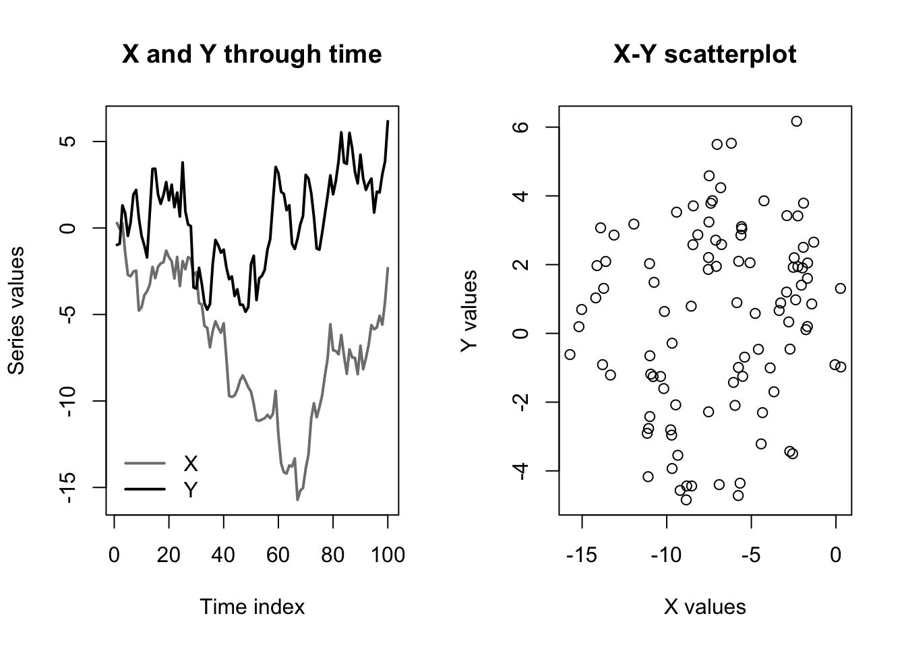
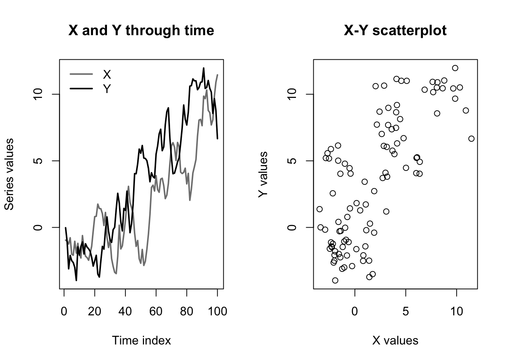
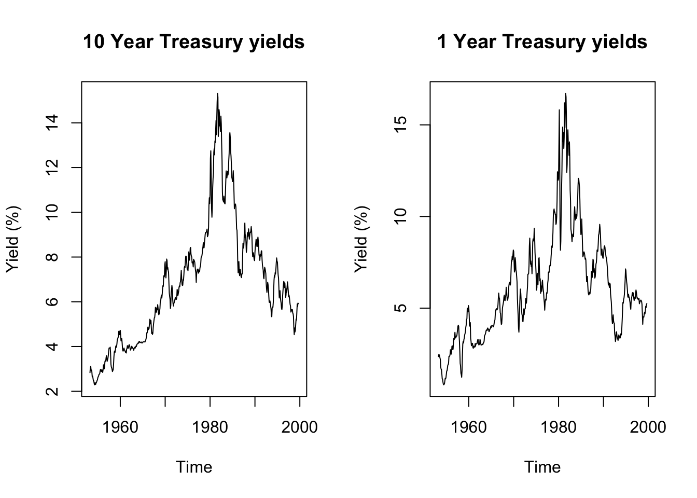
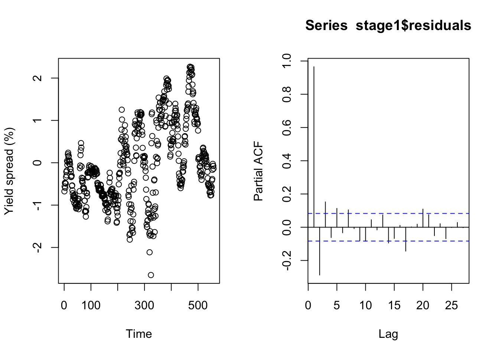

library(tseries)Cointegration
Note that throughout this page I will sometimes describe a process as being \(I(1)\) or \(I(0)\), which means “integrated with order 1” (like a random walk), or “integrated with order 0” (stationary)
Motivation: what is the problem?
When we studied cross-sectional regression techniques, we were taught that while highly-significant correlative relationships between two variables were not always causal, they did provide meaningful explanatory power which could help us to understand changes in one variable as a function of changes in the other.
To borrow a phrase from Susan Eloise Hinton, that was then, this is now.
Time series analysis presents two important differences from regression:
Forecasting happens entirely out-of-sample, and requires us not simply to interpolate, but to extrapolate. Regression is at its weakest during extrapolation, with less and less certainty in the slope of the relationship as we move farther from the mean of the data. In non-stationary and/or trending series, the new values are often far from the center of the data cloud.
Regression describes the covariance between two or more variables: whether they are above their mean or below their mean at the same (or opposite) times. However, in a non-stationary time series, the greatest reason for variance above or below a series’s mean is generally not changes in the other variable, but simply the response variable’s own stochastic or deterministic drift over time.
Therefore, any two series with any stochastic or deterministic drift are likely to look like strong candidates for a linear regression. If they both trend upward or downard, then they will show a significant direct relationship. If their trends have opposite directions, then they will show a significant inverse relationship. This apparent trend will mislead us when we try to forecast, as the trends are not guaranteed to continue over time, nor are there any ex ante reasons why the “predictor” would provide a better model than simply fitting a deterministic trend or random walk model. (That is, if both variables are actually dependent upon the time index \(t\) and not each other, then we should use the time index \(t\) to predict both — after all, we even know what values \(t\) will take in the future!)
=
(I encourage the reader to enjoy Tyler Vigen’s collection of spurious correlations.)
In cross-sectional regressions, spurious correlation is uncommon and its effects are often mild.1 In time series regression, spurious correlation is very common and its effects can easily spoil the entire analysis.
Nonstationarity obscuring a real relationship
As a simple example, imagine two \(I(1)\) series showing random walk behavior, except that one series depends heavily on the other. Specifically, let:
\[\begin{aligned} x_t &= x_{t-1} + \omega_t \\ y_t &= y_{t-1} + 0.5x_t + \omega'_t \end{aligned}\]
Where \(\omega_t\) and \(\omega_t'\) are two different Gaussian white noise series. Clearly, the random variable \(Y_t\) is not just correlated with \(X_t\), but actually causally linked to \(X_t\). And yet, consider the following:
Code
set.seed(0201)
x <- cumsum(rnorm(100))
y <- cumsum(rnorm(100)) + 0.5*x
par(mfcol=c(1,2))
matplot(1:100,cbind(x,y),type='l',col=c('#7f7f7f','#000000'),lwd=2,lty=1,
xlab='Time index',ylab='Series values',main='X and Y through time')
legend(x='bottomleft',legend=c('X','Y'),lwd=2,col=c('#7f7f7f','#000000'),bty='n')
plot(x,y,main='X-Y scatterplot',xlab='X values',ylab='Y values')
In the graph at left, we can see that the values of \(\boldsymbol{y}\) move up and down with the values of \(\boldsymbol{x}\). However, and as shown in the graph at right, the background drift of the two random walk processes completely obscures the relationship, since \(\boldsymbol{y}\) is above or below its mean more or less independently of whether \(\boldsymbol{x}\) is above or below its mean.
This impression would be confirmed by a simple linear regression:
Code
summary(lm(y~x))
Call:
lm(formula = y ~ x)
Residuals:
Min 1Q Median 3Q Max
-5.2420 -1.9432 0.2793 2.1894 5.3024
Coefficients:
Estimate Std. Error t value Pr(>|t|)
(Intercept) 1.10015 0.53067 2.073 0.0408 *
x 0.09979 0.06639 1.503 0.1360
---
Signif. codes: 0 '***' 0.001 '**' 0.01 '*' 0.05 '.' 0.1 ' ' 1
Residual standard error: 2.664 on 98 degrees of freedom
Multiple R-squared: 0.02253, Adjusted R-squared: 0.01256
F-statistic: 2.259 on 1 and 98 DF, p-value: 0.136Despite the strong true relationship, which we could write as \(\beta=0.5\), our regression can find no evidence of any link between the levels of \(\boldsymbol{y}\) and the levels of \(\boldsymbol{x}\).
All is not lost: consider what would happen if we used the differences of \(\boldsymbol{y}\) and \(\boldsymbol{x}\) instead of their levels:
\[\begin{aligned} \nabla y_t &= y_t - y_{t-1} \\ &= (y_{t-1} + 0.5x_t + \omega'_t) - (y_{t-2} + 0.5x_{t-1} + \omega'_{t-1}) \\ &= \nabla y_{t-1} + 0.5\nabla x_t + \nabla \omega'_t \end{aligned} \]
When we regress using differences, the slope \(\beta\) will remain unchanged and all the terms will now be \(I(0)\) (stationary). The stochastic drift in their levels will no longer obscure the true relationship between the variables:
Code
summary(lm(diff(y)~diff(x)))
Call:
lm(formula = diff(y) ~ diff(x))
Residuals:
Min 1Q Median 3Q Max
-3.02272 -0.69750 -0.03262 0.77780 2.56598
Coefficients:
Estimate Std. Error t value Pr(>|t|)
(Intercept) 0.08898 0.11498 0.774 0.441
diff(x) 0.63603 0.11676 5.447 3.87e-07 ***
---
Signif. codes: 0 '***' 0.001 '**' 0.01 '*' 0.05 '.' 0.1 ' ' 1
Residual standard error: 1.144 on 97 degrees of freedom
Multiple R-squared: 0.2343, Adjusted R-squared: 0.2264
F-statistic: 29.67 on 1 and 97 DF, p-value: 3.865e-07Nonstationarity suggesting an imaginary relationship
The dangers of regressing on nonstationary series go in both directions. Truly independent \(I(1)\) series can easily look entangled with each other. Consider an even simpler pair of random walks with no dependencies:
\[\begin{aligned} x_t &= x_{t-1} + \omega_t \\ y_t &= y_{t-1} + \omega'_t \end{aligned}\]
Although different initializations will create different results, the graphs below are typical:
Code
set.seed(0203)
x <- cumsum(rnorm(100))
y <- cumsum(rnorm(100))
par(mfcol=c(1,2))
matplot(1:100,cbind(x,y),type='l',col=c('#7f7f7f','#000000'),lwd=2,lty=1,
xlab='Time index',ylab='Series values',main='X and Y through time')
legend(x='topleft',legend=c('X','Y'),lwd=2,col=c('#7f7f7f','#000000'),bty='n')
plot(x,y,main='X-Y scatterplot',xlab='X values',ylab='Y values')
In this case, a regression upon levels will give the impression of a statistically significant relationship, while a regression upon differences (i.e. on their separate white noise processes) will show no relationship:
Code
summary(lm(y~x))
Call:
lm(formula = y ~ x)
Residuals:
Min 1Q Median 3Q Max
-6.9256 -2.4076 -0.4941 2.3027 6.9260
Coefficients:
Estimate Std. Error t value Pr(>|t|)
(Intercept) 1.85101 0.36587 5.059 1.97e-06 ***
x 0.89742 0.08492 10.568 < 2e-16 ***
---
Signif. codes: 0 '***' 0.001 '**' 0.01 '*' 0.05 '.' 0.1 ' ' 1
Residual standard error: 3.247 on 98 degrees of freedom
Multiple R-squared: 0.5326, Adjusted R-squared: 0.5278
F-statistic: 111.7 on 1 and 98 DF, p-value: < 2.2e-16Code
summary(lm(diff(y)~diff(x)))
Call:
lm(formula = diff(y) ~ diff(x))
Residuals:
Min 1Q Median 3Q Max
-2.2507 -0.6562 -0.0549 0.7652 2.4886
Coefficients:
Estimate Std. Error t value Pr(>|t|)
(Intercept) 0.07607 0.10364 0.734 0.465
diff(x) -0.06803 0.10346 -0.658 0.512
Residual standard error: 1.023 on 97 degrees of freedom
Multiple R-squared: 0.004437, Adjusted R-squared: -0.005826
F-statistic: 0.4324 on 1 and 97 DF, p-value: 0.5124We can even make a bolder claim: for a long enough sample size, a regression between two fully independent \(I(1)\) processes will always show a statistically significant relationship.
Cointegration, and how it informs the choice of model class
Two nonstationary series can often be differenced to remove spurious correlation, but this differencing also removes the important information contained in their levels. For example, both the differences and the levels of a key interest rate are important. The economy will always react to a 0.5% change in the federal funds rate, but a change from 0.5% to 1.0% and a change from 5.0% to 5.5% describe two very different economies. Erasing the levels erases key information.
Sometimes, we have no alternative. To avoid spurious regression, we must difference the data and make do with the information found in the changes.2
But other times, two nonstationary series can be studied together without differencing: when they are cointegrated.
Note
Let \(\boldsymbol{X}\) and \(\boldsymbol{Y}\) be two time series random variables, both integrated with the same order \(d\): \(\boldsymbol{X} \sim I(d), \boldsymbol{Y} \sim I(d)\).
Assume there exists some constant \(\alpha\) for which the linear combination \(\boldsymbol{Y} - \alpha \boldsymbol{X} \sim I(0)\), that is, that the weighted difference between \(\boldsymbol{X}\) and \(\boldsymbol{Y}\) is stationary.3
Then we say that \(\boldsymbol{X}\) and \(\boldsymbol{Y}\) are cointegrated with order \(d\).
When two series are cointegrated, some “rubber band effect” or, if you prefer, “error correction model”, keeps their series tied to one another. Divergences between the levels of the two series (after accounting for the scale of \(\alpha\)) never persist for long. The trend in the levels of the two variables is more than just spurious correlation, they are “pulling each other along” and changes in \(\boldsymbol{X}\) do explain (or even cause) changes in \(\boldsymbol{Y}\).
Code
data(tcm)
par(mfcol=c(1,2))
plot(tcm10y,main='10 Year Treasury yields',ylab='Yield (%)')
plot(tcm1y,main='1 Year Treasury yields',ylab='Yield (%)')
Code
print(paste0('10 Year yields stationary in level: ',
suppressWarnings(adf.test(tcm10y)$p.value) < 0.05))[1] "10 Year yields stationary in level: FALSE"Code
print(paste0('1 Year yields stationary in level: ',
suppressWarnings(adf.test(tcm1y)$p.value) < 0.05))[1] "1 Year yields stationary in level: FALSE"Code
print(paste0('10 Year yields stationary in differences: ',
suppressWarnings(adf.test(diff(tcm10y))$p.value) < 0.05))[1] "10 Year yields stationary in differences: TRUE"Code
print(paste0('1 Year yields stationary in level: ',
suppressWarnings(adf.test(diff(tcm1y))$p.value) < 0.05))[1] "1 Year yields stationary in level: TRUE"Code
stage1 <- lm(tcm10y ~ tcm1y)
summary(stage1)
Call:
lm(formula = tcm10y ~ tcm1y)
Residuals:
Min 1Q Median 3Q Max
-2.6513 -0.6990 -0.1533 0.7108 2.2680
Coefficients:
Estimate Std. Error t value Pr(>|t|)
(Intercept) 1.41867 0.08839 16.05 <2e-16 ***
tcm1y 0.88386 0.01311 67.41 <2e-16 ***
---
Signif. codes: 0 '***' 0.001 '**' 0.01 '*' 0.05 '.' 0.1 ' ' 1
Residual standard error: 0.9208 on 556 degrees of freedom
Multiple R-squared: 0.891, Adjusted R-squared: 0.8908
F-statistic: 4544 on 1 and 556 DF, p-value: < 2.2e-16Code
plot(stage1$residuals,ylab='Yield spread (%)',xlab='Time')
pacf(stage1$residuals)
Code
print(paste0('Residual yields stationary in level: ',
suppressWarnings(adf.test(stage1$residuals)$p.value) < 0.05))[1] "Residual yields stationary in level: TRUE"Cointegration motivates or changes the features of several time series models, such as (vector) error correction models (ECMs and VECMs), vector autoregressions (VARs), and autoregressive distributed lag models (ADLs). A full treatment is beyond this week’s lecture. For now, I can provide the following guidance:
If you believe that one or more exogenous predictors \(X_1, \ldots, X_k\) (or their lags) are confounding \(\boldsymbol{Y}\), and that an OLS regression would be misspecified only due to short-term autocovariance in the residuals, then apply dynamic regression with ARIMA errors.4
If any of the variables \(X_1, \ldots, X_k\) (or their lags) or \(\boldsymbol{Y}\) have stochastic trends, then difference them as needed, and beware that you might have lost the very information you were hoping to measure, except:
If you have a single stochastic predictor \(\boldsymbol{X}\) which is cointegrated with \(\boldsymbol{Y}\), then dynamic regression with ARIMA errors on levels will provide unbiased forecasts, though other models below will describe the system better.
If you believe that the regression relationship between \(\boldsymbol{Y}\) and exogenous predictors \(X_1, \ldots, X_k\) would be improved by including past values of \(\boldsymbol{Y}\) as explicit regressors, adding dynamic structure to the model (not just the errors), then apply an autoregressive distributed lag model (ADL).
- Unless the \(\boldsymbol{Y}\) and one or more predictors \(\boldsymbol{X}\) are cointegrated, in which case this will be poorly parameterized: the error-correction component will be shoehorned into your coefficients, muddying the true relationship.
If you believe that \(\boldsymbol{Y}\) and an endogenous predictor \(\boldsymbol{X}\) are cointegrated and that their dynamics should be represented structurally within the model rather than being rinsed out of the error term, then apply an error correction model (ECM).
If you have a group of variables evolving through mutual dependencies on their own past lags, but which are not cointegrated, and which you want to understand as a symmetric system rather than a single response modified by predictors, then apply a vector autoregression model (VAR), however:
- If the system does contain cointegration, then model these effects explicitly and apply a vector error correction model (VECM).
When the sample size is large, many possibly spurious predictors enter with very small coefficients, often creating minimal changes to the predictions or the other coefficients.↩︎
Sometimes this is even better than working with the levels — econometricians studying stock data often prefer working with percentage price changes rather than raw price levels, since the levels are unhelpfully affected by stock splits, changes in shares outstanding, etc.↩︎
We can accept level-stationary or trend-stationary here, since these wrinkles are easily removed before or after we difference the variables.↩︎
Following the convention established earlier, I am using the unbolded capitals \(X_1, \ldots, X_k\) to denote a group of exogenous predictors which are not being studied for their own time series behavior.↩︎